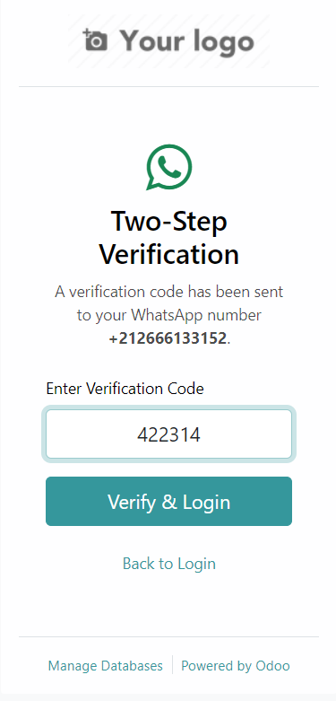
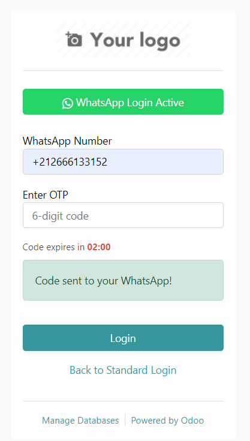
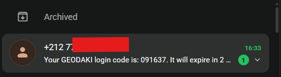

WhatsApp OTP Authentication
Authenticatification sécurisée via OTP WhatsApp pour Odoo
Ce module permet une connexion Odoo via un code OTP (mot de passe à usage unique) envoyé directement par WhatsApp, avec une interface de validation intégrée au login standard. Implémentation via l'API UltraMsg pour un déploiement rapide et fiable.
Fonctionnalités principales
- ✓Bouton "Login by WhatsApp" intégré à la page de connexion
- ✓Saisie du numéro WhatsApp au format international (+212...)
- ✓Envoi automatique d'un code OTP à 6 chiffres sur WhatsApp
- ✓Validation du code OTP directement dans l'interface
- ✓Page de vérification 2FA dédiée pour renforcer la sécurité
- ✓Expiration automatique du code après 2 minutes
- ✓Bouton pour renvoyer le code si nécessaire
- ✓Gestion complète des erreurs et messages de feedback
Images de démonstration
Écran principal de login WhatsApp :

Flux d'authentification :

Écran de vérification :

Pré-requis
- Odoo 16 ou supérieur
- Module web actif
- Compte UltraMsg configuré avec les clés API
- Accès internet depuis le serveur Odoo vers l'API UltraMsg
- Numéro WhatsApp Business autorisé par UltraMsg
Installation
- Copier le module
auth_whatsapp_otp dans le dossier des modules Odoo
- Redémarrer le serveur Odoo
- Mettre à jour la liste des modules (Modules → Mettre à jour la liste des modules)
- Installer le module WhatsApp OTP Authentication
Configuration
Important : Configurez les paramètres UltraMsg avant d'utiliser ce module.
- Accédez aux paramètres du système (Paramètres → Configuration)
- Renseignez votre clé API UltraMsg
- Configurez le numéro WhatsApp Business autorié
- Activez la validation en deux étapes si souhaité
- Testez la connexion avant de déployer en production
Flux d'utilisation
- L'utilisateur accède au formulaire de login Odoo
- Il clique sur "Login by WhatsApp"
- Il saisit son numéro WhatsApp au format international
- Il clique sur "Validate & Send Code"
- Un code OTP est envoyé via WhatsApp
- L'utilisateur saisit le code reçu
- Il clique sur "Login" pour se connecter
- L'utilisateur est redirigé vers le tableau de bord Odoo
Caractéristiques de sécurité
- OTP à 6 chiffres : Code sécurisé et difficile à deviner
- Expiration : Le code expire automatiquement après 2 minutes
- Limite de tentatives : Protection contre les attaques par force brute
- Authentification 2FA : Vérification supplémentaire disponible
- Validation côté serveur : Tous les codes sont vérifiés du côté serveur
Dépannage
- Le code n'est pas envoyé : Vérifiez la configuration d'UltraMsg et la connectivité Internet
- Code expiré : Cliquez sur "Resend code" pour recevoir un nouveau code
- Erreur de validation : Vérifiez que vous avez entré les 6 chiffres correctement
- Retour au login standard : Cliquez sur "Back to Standard Login" pour utiliser email/mot de passe
Remarques importantes
- Le module fonctionne uniquement si UltraMsg est correctement configuré
- Les codes OTP ne sont valides que 2 minutes
- Les utilisateurs peuvent basculer entre login WhatsApp et login standard
- Tous les événements de connexion sont enregistrés dans les logs Odoo
Support
Pour plus d'informations sur la configuration d'UltraMsg, consultez la documentation officielle.
En cas de problème, consultez les logs du serveur Odoo pour les détails des erreurs.